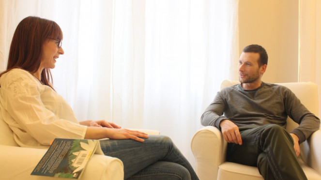
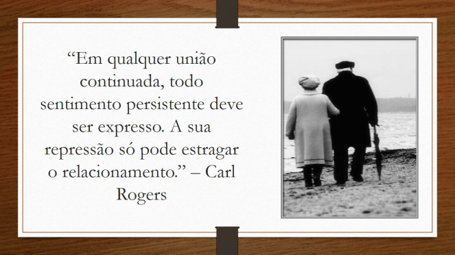
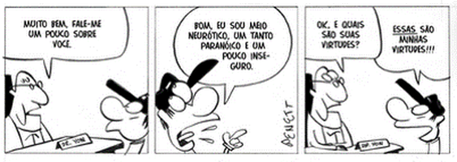

Fortalecendo Relações
Tábata Jagochitz - Psicóloga - CRP: 06/123652
Bem vindo(a) ao Fortalecendo Relações!
Quer ter relações saudáveis e fortalecidas?
Aqui você encontrará textos sobre assuntos relacionados à Psicologia, e principalmente voltados para as relações interpessoais!
Espero que goste!
Blog
Benção da liberdade

Gostaria de compartilhar com vocês esse texto que me tocou profundamente. Quando libertamos as pessoas ao redor e a nós mesmos de atender expectativas, e exercitamos o perdão, nossas relações se tornam mais leves, fortalecidas e fundamentadas no amor! Espero que gostem!
Gostaria de compartilhar com vocês esse texto que me tocou profundamente.
É uma antiga bênção que foi criada no idioma Nahuatl, falado desde o século VII, na região central do México. Ela trata de perdão, carinho, desapego e libertação.
Quando libertamos as pessoas ao redor e a nós mesmos de atender expectativas, e exercitamos o perdão, nossas relações se tornam mais leves, fortalecidas e fundamentadas no amor!
“Eu liberto meus pais do sentimento de que já falharam comigo. Eu liberto meus filhos da necessidade de trazerem orgulho para mim.
Que possam escrever seus próprios caminhos de acordo com seus corações, que sussurram o tempo todo em seus ouvidos.
Eu liberto meu parceiro da obrigação de me completar. Não me falta nada, aprendo com todos os seres o tempo todo.
Agradeço aos meus avós e antepassados que se reuniram para que hoje eu respire a vida.
Libero-os das falhas do passado e dos desejos que não cumpriram, conscientes de que fizeram o melhor que puderam para resolver suas situações dentro da consciência que tinham naquele momento. Eu os honro, os amo e reconheço inocentes.
Eu me desnudo diante de seus olhos, por isso eles sabem que eu não escondo nem devo nada além de ser fiel a mim mesmo e à minha própria existência, que caminhando com a sabedoria do coração, estou ciente de que cumpro o meu projeto de vida, livre de lealdades familiares invisíveis e visíveis que possam perturbar minha Paz e Felicidade, que são minhas únicas responsabilidades.
Eu renuncio ao papel de salvador, de ser aquele que une ou cumpre as expectativas dos outros.
Aprendendo através, e somente através do AMOR, eu abençoo minha essência, minha maneira de expressar, mesmo que alguém possa não me entender.
Eu entendo a mim mesmo, porque só eu vivi e experimentei minha história; porque me conheço, sei quem sou, o que eu sinto, o que eu faço e porque faço. Me respeito e me aprovo.
Eu honro a Divindade em mim e em você.
Somos livres.”
Espero que tenham gostado!
O que você faz com o que sente?
Temos dificuldade de aceitar aquilo que consideramos “ruim” em nós. Estamos sempre lutando contra nós mesmos em busca da “perfeição”. Quer saber mais? Então, boa leitura!
“Quando a pessoa é capaz de extravasar a angústia, a fúria, o desespero ou as emoções que sente, e quando aceita esses sentimentos como seus, eles perdem seu poder explosivo.” – Carl Rogers
Temos dificuldade de aceitar aquilo que consideramos “ruim” em nós. Estamos sempre lutando contra nós mesmos em busca da “perfeição”.
O que não sabemos é que quanto mais lutamos, ou quanto mais tentamos esconder aquilo que consideramos “ruim”, maior tudo isso vai se tornando, ou como Rogers disse, esses sentimentos e emoções vão ganhando um poder explosivo.
Quantas vezes guardamos a raiva, a tristeza, o medo dentro de nós, enchendo o nosso “copo”, por termos aprendido que não podemos sentir essas coisas, que são sentimentos “ruins”, que devemos engolir o choro e seguir em frente.
Porém, quando menos esperamos, uma situação que não tem um impacto tão grande, se transforma na gotinha que faltava para transbordar o nosso “copo” e explodimos. Tudo o que estava preso sai de uma maneira desenfreada, causando consequências que poderiam ter sido evitadas se tivéssemos aceitado o que estávamos sentindo no momento em que sentimos.
Outro fato que não sabemos é o de que para conseguirmos mudar algo em nós, primeiro precisamos nos conhecer e nos aceitar. Rogers também nos diz: “Quando me aceito como sou, posso então mudar.”
Não somos “bons” e “corretos” o tempo todo. Não sentimos só amor, compaixão, alegria. Também sentimos raiva, medo, inveja, tristeza e, tudo bem. Podemos sentir. Faz parte do SER humano. Todos sentimos.
Abrace a sua sombra (tudo aquilo que não gosta em você ou que considera ser “ruim”). Se você a abraçar, conseguirá pensar mais facilmente na ação que poderá tomar. O problema não está em sentir, mas sim no que iremos fazer com tudo o que sentimos.
A dor da mudança
Mudar é necessário, mas é dolorido. Alguns momentos de nossas vidas nos colocam em check. São momentos cruciais, momentos de crise. O que fazer? Como fazer? Por onde começar? Quer saber mais? Boa leitura!
Dói. Está doendo. E não dói pouco não. A dor é intensa.
Não sei se você já teve um desses momentos, mas é como se “o universo”, através de situações e pessoas, mostrasse a você e esfregasse em seu rosto que algumas atitudes precisam ser tomadas. Que você precisa assumir as rédeas da sua vida. Que ficar culpando e responsabilizando os outros, esperando que eles mudem, não irá te levar a lugar algum.
Chegou a hora. A responsabilidade por estar tudo como está, é sua. E a responsabilidade por levantar e fazer diferente também.
E como chegar a essa constatação é dolorido e desesperador.
Mas onde está a minha força? A dor é tamanha que não sei se vou conseguir. Minha cabeça me diz o tempo todo: “não consigo”. “Sou assim e fui assim por tanto tempo, não é agora que conseguirei mudar”.
Porém, ao mesmo tempo, ”o universo” continua a me bombardear. “Levanta! Você não está percebendo que se não se colocar em movimento, se não tentar fazer diferente, você não chegará aonde quer?”
Crise. Esse é um dos momentos de minha vida em que percebo estar em crise. O que fazer? Como fazer? Por onde começar? Será que vou conseguir?
Paraliso. Crises costumam me paralisar. Não que eu estivesse em movimento antes, mas dessa vez é uma paralisia de desespero, e não uma paralisia confortável, de quando as coisas não estão do jeito que gostaríamos, mas também não estão tão ruins e então não fazemos nada a respeito.
Além das leituras que fiz sobre esse assunto, algumas experiências me mostraram também que a crise é positiva. Mas como algo que causa tanta dor pode ser positivo?
E então começo a perceber que são nesses momentos que paro mais para refletir. Que me forço a olhar pra mim, a olhar pra dentro e a tentar me compreender. Nas primeiras vezes que passei por isso costumava me criticar, me destruir com minhas próprias palavras de reprovação. Mas aos poucos fui aprendendo que essa atitude não ajuda, ao contrário, só traz mais dor.
Aprendi a me acolher. A tentar olhar para mim com mais compaixão e dizer: “Você estava fazendo o melhor que podia, dentro das condições que você tinha. Mas agora não parece ser o suficiente e isso dói. A dor é necessária sabia? E ela não dura para sempre, mas precisa ser sentida. Então sinta, chore, converse com alguém sobre isso. Você não precisa passar por isso sozinha. E amanhã, após ter sentido tudo o que precisava, talvez você encontre a força necessária para seguir adiante e fazer diferente.”
Começo a me lembrar de quando li um livro em que o autor dizia: “Quando me aceito como sou, posso então mudar.” Olho novamente para dentro. Percebo ser uma junção de muitas coisas e, ser assim, não significa que não poderei mudar.
A dor está diminuindo. Sinto um pouco mais de tranquilidade. Sei que preciso fazer algo e que farei. Sou responsável pela mudança e, tijolo por tijolo, ela será construída.
Psicólogo é coisa de "louco"! Será?
No dia 27 de agosto, comemoramos o dia do psicólogo. Você sabe o que faz esse profissional? Sabe como ele pode te ajudar? Será que psicólogo é coisa de “louco”? Quer saber mais sobre esse assunto? Então boa leitura!
No dia 27 de agosto, comemoramos o dia do psicólogo. Além disso, essa data marca a regulamentação da psicologia enquanto profissão no Brasil, comemorando neste ano (2017), 55 anos.
Apesar de ter sido regulamentada enquanto profissão há 55 anos atrás, nós psicólogos continuamos a batalha para que vários pré-conceitos sejam quebrados com relação ao nosso trabalho e para que toda a população tenha acesso a esse serviço e sinta os seus benefícios.
Tivemos sim muitas conquistas durante esses anos, mas ainda temos um longo caminho a percorrer. Tenho certeza que você, nos dias atuais, ainda ouve expressões como estas: “psicólogo é coisa para louco!”, “não vou contar sobre a minha vida para um estranho!”, “para que ir ao psicólogo se posso conversar com um amigo ou ir viajar?”.
É em virtude de expressões como estas que digo termos um longo caminho a percorrer e escrevo esse texto.
Você sabe o que faz um psicólogo?
Antes de responder a essa pergunta, gostaria de fazer outra. Você sabia que o psicólogo pode atuar na clínica, em empresas, em programas sociais, ONGs, hospitais, escolas, fóruns, abrigos, penitenciárias, entre outros?
Sim! Os psicólogos podem atuar em todos esses ambientes pois nosso “instrumento” de trabalho é o ser humano, e onde há pessoas pode haver a atuação desse profissional.
Agora, voltando a primeira pergunta: o que faz um psicólogo?
O psicólogo é um profissional graduado que atua na promoção da saúde mental. Em cada ambiente ele exerce uma função específica, mas em todos visa o bem estar das pessoas que ali se encontram.
Na clínica, a “ferramenta” utilizada por este profissional é a psicoterapia. E o que é a psicoterapia?
É um conjunto de técnicas e meios utilizados para promover a saúde mental naquele que a procura. É um espaço destinado não só as pessoas que sofrem com algum transtorno ou com algum sintoma que as incomoda. É claro que também se destina para essas pessoas, pois as ajudará a identificar as causas do “problema” e a cuidar dessas questões, podendo aliviar os sintomas ou até mesmo saná-los.
Mas a psicoterapia também pode ser preventiva. Não é necessário esperar que alguns sintomas se transformem em algo mais “sério” para procurar um profissional. A psicoterapia pode ser procurada por todos aqueles que querem se conhecer e desejam ter qualidade de vida e bem estar emocional.
Através da psicoterapia o indivíduo pode passar a se conhecer melhor, desenvolver sua autonomia, perder a necessidade de controle e rigidez, conquistar a liberdade de escolha, modificar alguns comportamentos que lhe causam prejuízos, cuidar de questões afetivas e de relacionamentos, ressignificar o sofrimento e as situações adversas, valorizar o momento presente e, através de todos esses benefícios, melhorar sua qualidade de vida e sua saúde mental.
Agora pense comigo. Depois de todas essas informações, será que psicólogo é coisa de “louco”? Para começar, o que é loucura? Será que só as pessoas rotuladas como loucas tem medos, angústias, dificuldades de relacionamentos, dificuldades no trabalho, querem se conhecer melhor e ter mais qualidade de vida? Acredito que não, não é mesmo!?
E para finalizar, é claro que conversar com um amigo, viajar, fazer compras tem seus benefícios para a nossa qualidade de vida e saúde mental.
Mas se você não estiver bem consigo, essas situações lhe proporcionarão benefícios que não terão uma duração prolongada.
O psicólogo é um profissional que estudou, no mínimo, cinco anos, para poder lhe ajudar a conseguir todos os benefícios citados acima. E além disso, não irá lhe julgar ao ouvir seus relatos. Sua função é acolhê-lo e ajudá-lo a encontrar as respostas que você está procurando.
Permita-se!
vamos falar sobre "phubbing"?
Você já se sentiu ignorado por alguém que estava no celular? Ou já ignorou alguém que estava ao seu lado para checar o seu celular? Já percebeu o quanto essas atitudes prejudicam nossas relações? Então esse texto é para você! Boa leitura!
Neste texto gostaria de falar com você sobre um assunto importante, o qual tem causado um impacto negativo em nossos relacionamentos interpessoais: o phubbing.
Você sabe o que essa palavra quer dizer?
Em 2013 o dicionário australiano Macquarie criou este termo através da união das palavras “phone” (telefone) e “snubbing” (esnobar), e este passou a ser utilizado quando alguém ignora as pessoas ao seu redor em virtude do celular.
Essa situação parece comum, não parece?
Em um estudo da Baylor University, no Texas, os pesquisadores constataram que costumamos olhar para nossos celulares mais de CENTO E CINQUENTA vezes ao dia!
Confesso que esse dado me deixou assustada. Já parou para pensar quantas coisas passam sem que percebamos, durante essas 150 vezes? Quantas pessoas, que estão ao nosso lado, ignoramos para checar redes sociais, e-mails e outros aplicativos?
Não considero a internet ou o uso de celulares como vilões. A tecnologia nos proporciona facilidade, comodidade, rapidez. Porém, não aprendemos como utilizar esses recursos de uma maneira saudável, nos tornando, muitas vezes, seus reféns. Como tudo na vida, se utilizarmos a internet, os celulares, de forma exagerada, estes nos causarão prejuízos.
Prejuízos que temos sentido em nossas relações. Nos aproximamos de pessoas distantes e nos afastamos de pessoas próximas. Temos cada vez mais “amigos” nas redes sociais, mas estamos cada vez mais sozinhos, pois para conversar com as pessoas precisamos apenas do celular. E, como nas redes sociais só compartilhamos nossos momentos felizes, ficamos carentes de pessoas para dividirmos também nossas angústias, medos, incertezas.
Nossas relações precisam de cuidados para se manterem saudáveis e fortalecidas, como o contato “olho no olho” e a atenção. Precisamos sentir que o outro está presente quando conversamos, que se importa com o que estamos dizendo e sentindo. Porém, se sempre que falamos o outro está no celular, nos ignorando, ou fingindo estar prestando atenção, há uma grande probabilidade dessa relação enfraquecer.
E como podemos minimizar esses prejuízos?
Com o bom e velho diálogo! O ignorado precisa comunicar ao outro como se sente quando isso acontece, pois muitas vezes aquele que ignora está tão concentrado em seu celular, que não percebe o que está fazendo e o quanto essa atitude incomoda e chateia aqueles que estão ao seu redor.
Já aquele que ignora precisa começar a estabelecer algumas metas para se “desligar” do celular, como por exemplo: “durante o jantar o celular ficará na sala e sem som”.
Dessa forma começamos a valorizar o momento presente com as pessoas que realmente estão ao nosso lado! Afinal um café com amigos, um almoço em família, um filme com a pessoa amada nos despertam sensações de prazer e alegria. Se soubermos aproveitar e deixar o celular de lado, é claro!
É permitido SENTIR!
Você já reparou o quanto tememos sentir? O quanto nossos sentimentos e emoções nos deixam desconfortáveis? E por que será? Quer descobrir? Então boa leitura!
Neste texto escrevo sobre um assunto muito importante: nossas emoções e sentimentos.
Após ler o livro “A coragem de ser imperfeito”, escrito pela Ph.D. em serviço social, professora, palestrante e pesquisadora na Universidade de Houston, Brené Brown, fui tomada por várias reflexões sobre questões nas quais acredito muito, mas que tenho dificuldades, como todo ser humano, relacionadas às nossas emoções e sentimentos.
Você já parou para pensar em como temos medo de sentir? No quanto lutamos contra os nossos sentimentos e emoções?
Enquanto lia o livro e após terminá-lo, refleti sobre isso. O quanto a raiva, a tristeza, o medo, o nojo, a culpa, a vergonha, o orgulho, a inveja, o desprezo nos assustam e amedrontam. E não são apenas as emoções vistas como “negativas” que nos causam medo e receio, mas a alegria, a surpresa, a compaixão, o amor, muitas vezes também nos causam desconforto. Tenho certeza que você já ouviu pessoas dizendo: “Nossa estou muito alegre hoje, isso não é um bom sinal. Acho que vai acontecer alguma coisa ruim.”
Em virtude dessas sensações, e de, na maioria das vezes, não sabermos lidar com nossas emoções e sentimentos, a vontade de não sentirmos se torna muito grande. E a nossa “briga interna” contra elas então, transforma-se em uma batalha imensa.
Dizemos para nós mesmos: “Você não pode sentir raiva!”, “Nossa, como você é fraco(a) e medroso(a)!”, “Você tem tudo na vida, não tem motivos para estar triste!”, “Não devia estar sentindo compaixão por essa pessoa, ela já me fez tanto mal!”.
Sabe por que sentir nos causa tanto desconforto?
Pois deixamos transparecer nossa vulnerabilidade. E a vulnerabilidade é, de fato, assustadora. Assumir que somos imperfeitos, que erramos, sentimos, não é uma atitude fácil.
Sobre a nossa imperfeição e vulnerabilidade, Brené Brown diz em seu livro: “Sim, eu sou imperfeito, vulnerável e às vezes tenho medo, mas isso não muda a verdade de que também sou corajoso e merecedor de amor e aceitação.”
Vulnerabilidade, emoções e sentimentos não são sinais de fraqueza. Ao contrário, nos assumirmos imperfeitos, nos permitirmos sentir e demonstrar nossos sentimentos exige muita coragem.
E será que podemos não sentir?
A resposta é não. Não podemos nos impedir de sentir. Emoções e sentimentos são inerentes ao ser humano.
É necessário abraçarmos tudo aquilo que faz parte de nós. E as emoções consideradas “boas” e “ruins” fazem parte do que somos. Carl Rogers nos diz: “Quando me aceito como sou, posso então mudar.” Portanto, para que haja mudança, primeiro preciso me conhecer e me aceitar. Aceitar não apenas aquilo que considero ser “bom”, mas também o que considero não ser tão bom e que faz parte de mim.
Não posso me impedir de sentir raiva, mas posso perceber que a estou sentindo e pensar o que fazer a respeito, como agir, o que está motivando ou justificando essa emoção.
Não posso me impedir de sentir medo, mas posso questionar qual o seu sentido e decidir agir, mesmo o sentindo.
E, para finalizar, lembre-se: os sentimentos que reprimimos (guardamos dentro de nós), podem se manifestar em nosso corpo de outras formas: gripes, resfriados, dores e, a longo prazo, através de transtornos psicológicos como a depressão, a síndrome do pânico, entre outros.
Não há problema algum em sentir-se triste e chorar por uma noite ou duas. A tristeza vai embora, levantamos e seguimos em frente mais leves.
Portanto, a partir de hoje decrete que É PERMITIDO SENTIR!
Será desconfortável sim, mas tenho certeza que aos poucos se tornará gratificante e te aproximará das pessoas. Não gostamos de nos sentir vulneráveis, mas gostamos de nos relacionar com pessoas que se mostram como são, com sua vulnerabilidade e imperfeição.
Permita-se sentir!
E se precisar de ajuda, não hesite em procurar!
O que o jogo “Baleia Azul” e a série “13 Reasons Why” tem nos mostrado?
Tanto a série quanto o jogo tem nos mostrado que precisamos falar sobre saúde mental!! E é por esse motivo também que a reflexão proposta nesse texto se torna tão importante. Ficou curioso? Boa leitura!!
Tenho certeza que algumas pessoas, ao lerem o título do texto pensaram: “Mas de novo esse assunto? Não aguento mais!”
Porém, peço que o leia até o fim, para entender o porquê decidi falar sobre esse assunto, e o quanto é importante falarmos sobre ele “de novo”.
O que o jogo “Baleia Azul” e a série “13 Reasons Why” têm nos mostrado?
Ambos têm nos mostrado o quanto precisamos falar sobre saúde mental. Precisamos falar sobre depressão, transtorno bipolar, crises de pânico, ansiedade, entre outros transtornos. Precisamos falar sobre sentimentos, emoções, angústias. Precisamos falar sobre bullying, assédio, suicídio.
O que está por trás desse jogo e do enredo da série?
Seres humanos fragilizados, principalmente adolescentes, perdidos em suas dores, angústias, sofrimentos e, ao mesmo tempo, com medo de serem julgados, inferiorizados, mal compreendidos. E a série, apesar de seus “pecados” retrata isso muito bem.
Vamos pensar juntos. Você acha que uma pessoa saudável mentalmente, com sonhos, planos, relações saudáveis e fortalecidas, iria optar por jogar um jogo em que a tarefa final é o suicídio?
Acredito que não, não é mesmo!?
Fico tentando imaginar, pois acredito que por mais que sejamos empáticos não seria possível sentir nem um terço do sofrimento e da falta de esperança, que uma pessoa com pensamentos suicidas, ou que tenha chegado a concretizar o suicídio, sinta ou tenha sentido.
O assunto é muito sério. Depressão, transtorno bipolar (apontados como os principais transtornos que podem levar alguém ao suicídio), não se curam com chineladas, com broncas, com julgamentos. Ao contrário, essas atitudes podem agravar os sintomas.
Um ser humano em sofrimento psíquico precisa de acolhimento, compreensão, AJUDA! E a ajuda profissional é fundamental para um tratamento adequado.
A campanha anual da Organização Mundial da Saúde é sobre a depressão. De acordo com a OMS, daqui há alguns anos, a depressão será a doença mais incapacitante.
E diante de tantos dados, fatos e notícias por que será que ainda acreditamos que as doenças “da mente” são frescura? Que se curam com chineladas?
Um dos motivos é o fato de falarmos muito pouco sobre elas. E é por isso que disse, no começo do texto, ser tão importante falar sobre esse assunto “de novo”. Quanto mais falarmos sobre elas (as doenças “da mente”), mais natural será falarmos sobre elas. E dessa forma, deixarão de ser um tabu, deixarão de ser alvo de preconceito e julgamentos.
Para finalizar, gostaria de discutir apenas mais um aspecto. O que mais esse jogo e essa série têm nos mostrado?
Que estamos carentes de relações saudáveis e fortalecidas. Que os adolescentes têm sido negligenciados. A relação saudável entre pais e filhos na adolescência é fundamental para a prevenção de suicídios e de transtornos como a depressão.
Você, pai ou mãe, sabe quais são as dores dos seus filhos? Quais as angústias deles? O que eles tem feito na internet? Quais as relações deles na escola? Se essas relações têm proporcionado a eles sentimentos bons ou ruins?
As respostas dadas a esses questionamentos, e todos os acontecimentos e notícias recentes só nos mostram que precisamos cuidar dos nossos adolescentes. Olhar para eles com mais compreensão e menos julgamento. Vamos refletir sobre isso?
Amor, Respeito e Liberdade
Esse texto do Kau Mascarenhas é quase um tutorial de como ter e manter relações saudáveis, tanto com os outros, como com você mesmo. Portanto, boa leitura!
“Aquilo que existe em mim, e faz parte de mim, pode ser transformado.
Aquilo que é do outro, e faz parte do outro, só pode ser transformado pelo outro;
e será compreendido e aceito por mim dentro dos meus limites.
Posso falar ao outro, como me sinto em relação ao que ele faz ou diz.
Mas não tenho o poder de controlar o que ele faz ou diz.
Não posso afirmar: “aquilo que você fez ou disse me feriu”.
Eu é que me feri com aquilo que o outro fez ou disse.
Sou dono das minhas emoções, sensações e sentimentos.
Sou dono das minhas atitudes, pensamentos e palavras.
Não é coerente dizer que fiz algo com alguém só porque alguém fez outra coisa comigo primeiro.
Agindo assim sou apenas resposta e eco.
É mais valioso optar por agir em vez de apenas reagir.
É mais sensato perceber que sou senhor das minhas ações,
e se faço ou fiz algo sou o grande responsável por isso.
Reconheço que as rédeas do meu destino estão em minhas mãos.
E me recuso a segurar as rédeas do destino do outro.
Busco o amor em sua mais bela expressão e por isso abro mão de querer ter o controle
sobre a vida do outro.
Quero amar com liberdade. Quero amar com plenitude.
Quero amar antes de tudo porque é bom amar.”
Kau Mascarenhas
Por que fortalecer minhas relações?
Já parou para pensar em como seria viver sozinho, sem relações interpessoais? Nesse texto relato um pouco sobre os benefícios proporcionados pelas relações sociais. Quer saber mais? Boa leitura!
Gostaria de começar esse texto propondo uma reflexão:
Você já imaginou como seria a sua vida sem as suas relações interpessoais? Como seria se você fosse uma pessoa solitária? Sem vínculos afetivos?
É claro que precisamos de momentos onde estejamos sós, para refletir, exercitarmos o autoconhecimento. Mas vivermos completamente sós parece algo assustador para a maioria das pessoas, certo!?
Isso acontece devido ao fato de sermos seres biopsicossocioespirituais.
Nossa! E o que quer dizer esse nome gigante?
O significado desse conceito é o de que somos seres biológicos (bio): possuímos um corpo, o qual apresenta algumas necessidades e exige também alguns cuidados. Além disso também somos seres que pensamos, apresentamos necessidades afetivas, emocionais (psico). O termo sócio se refere as nossas relações, ou seja, somos seres sociais, que nos relacionamos e que necessitamos desse relacionamento. E por fim, também faz parte da nossa constituição, a espiritualidade, a nossa maneira de nos conectar com o Divino, de ter fé, esperança.
E já que somos seres sociais e que necessitamos ter relações interpessoais, será que elas nos trazem benefícios?
Bem, gosto muito de estudar e falar sobre as relações interpessoais e sobre algumas atitudes que podemos ter para torná-las saudáveis e fortalecidas. Mas para querermos fortalecê-las, seria fundamental entender a importância, os benefícios de ter e manter nossas relações.
De acordo com um estudo realizado na Universidade da Carolina do Norte em Chapel Hill, nos EUA, quanto mais e melhores laços sociais as pessoas desenvolvem, melhor é a sua saúde em diferentes fases da vida.
Após entendermos o conceito de biopsicossocioespiritual, essa conclusão já era prevista, certo? Pois, como somos seres compostos por todas essas esferas, se alguma delas não “caminha” muito bem, há uma probabilidade gigantesca de que outras esferas também sejam afetadas.
O estudo também diz que, na adolescência, as relações sociais podem ajudar a prevenir, inflamações e a obesidade abdominal; enquanto na velhice, podem ajudar no controle da hipertensão arterial. Já na meia idade, o estudo relata que, o importante não é a quantidade de relações que estabelecemos, mas a qualidade delas e o quanto elas podem nos fornecer apoio.
Agora, pense comigo: se nossas relações podem contribuir para uma melhora de nossa saúde física, imagina o que não podem fazer com relação a nossa saúde mental, nossas necessidades emocionais e afetivas?
Ao pesquisar sobre os benefícios das relações para nossa saúde mental, encontrei outro estudo, realizado na Inglaterra e publicado na revista Proceedings of the Royal Society B, o qual diz: “Ter uma boa rede social pode ser uma maneira de combater e prevenir a depressão”.
Após ler sobre esse estudo, parei para pensar no quanto me sinto bem (feliz, relaxada) após uma boa conversa e algumas risadas com meus amigos, ou quando estou conversando com meus pais e usufruindo do “colo” deles, ou até mesmo quando estou no trabalho trocando vivências e conhecimentos com outros profissionais. E, fazendo essa reflexão, percebi os benefícios que essas relações me proporcionam e o quanto são importantes para minha vida e minha saúde.
E para você? Qual a importância e os benefícios das suas relações em sua vida e em sua saúde?
Por esses motivos descritos no texto e pelos motivos que você encontrou ao fazer essa reflexão, é tão importante termos e conservarmos nossas relações interpessoais. E é em virtude disso que gosto de ler e falar sobre esse assunto. Estamos carentes de relações saudáveis e fortalecidas e sentimos o efeito disso diretamente em nossa saúde mental e física.
Então “bora” cuidar dessas relações?
Expectativas e Frustrações
Será que as nossas expectativas atrapalham as nossas relações? Criar expectativas aumenta a chance de que as frustrações apareçam. Quer saber mais? Boa leitura!
Para começar utilizarei um ensinamento de Osho, um guru indiano: “Uma vez que abandone as expectativas, você aprendeu a viver.” Peço permissão para acrescentar uma observação a esse ensinamento: “Uma vez que abandone as expectativas, você aprendeu a viver e a se relacionar.”
Ao refletir sobre as expectativas, percebi as inúmeras vezes em que as criei ao me relacionar com meus amigos, esposo, colegas de trabalho, familiares. E percebi também que muitas vezes me frustrei, pois elas não foram atendidas.
Mas será que elas deveriam ser atendidas? Ou eu quem não deveria tê-las criado?
Carl Rogers, em sua teoria da personalidade, explica que quando nascemos somos movidos apenas por nossas necessidades biológicas. Portanto, um bebê ao sentir fome, começa a chorar para obter aquilo de que necessita, mesmo quando essa fome é sentida durante a madrugada e seu choro acordará seus pais (o bebê não tem consciência de todos esses fatos).
Porém, conforme o tempo passa, a criança começa a perceber que alguns de seus comportamentos provoca reações positivas em seus pais e outros não. E é aí que os “problemas” começam, pois a criança, muitas vezes, passa a dar mais valor para a reação dos pais, do que para aquilo que sente ou quer fazer. Ou seja, seus “padrões” passam a ser externos e não mais internos.
Esse movimento pode ir se tornando cada vez mais intenso na adolescência. Para serem aceitos em grupos, muitos adolescentes deixam de ser eles mesmos para agradar aos outros, atender as expectativas deles.
E, assim como pouco a pouco passamos a nos deixar de lado, atendendo as expectativas externas para sermos aceitos e amados, aprendemos também a criar expectativas com relação as pessoas. Afinal, se eu tenho que atender as expectativas dos outros, então eles também tem que atender as minhas expectativas com relação a eles. Correto? Correta ou não, é essa a associação que acabamos fazendo muitas vezes.
Você consegue imaginar qual o desfecho disso tudo? Como tudo isso termina?
Em grande parte das vezes termina em dor, frustração, sofrimento, falta de autenticidade.
E há alguma solução? Como fazer diferente?
Conforme consigo perceber que posso ser quem eu sou, sem precisar atender as expectativas dos outros, e que, em virtude disso, muitos não irão gostar de mim, mas em contrapartida, muitos outros gostarão, fica mais fácil entender que o outro também não tem obrigação de atender as minhas expectativas com relação a ele.
Essa nova percepção torna as minhas relações, comigo e com os outros, mais leves e verdadeiras. Quando me aceito como sou e posso ser eu mesmo, fica mais fácil permitir que o outro também seja ele mesmo.
O que acontece depois disso?
As minhas frustrações diminuem. Pois eu sou o responsável por elas e não o outro. Quem criou a expectativa fui eu, certo?!
Para finalizar, deixarei uma pergunta: o que você acha de começar a ser você e dessa forma permitir que o outro faça o mesmo?
Palavras são janelas (ou são paredes)
A comunicação é fundamental para que tenhamos relações saudáveis e fortalecidas. Palavras são janelas ou são paredes? Podem ser as duas coisas, certo? Então, boa leitura!
Neste texto, gostaria de compartilhar com você um poema, da autora Ruth Bebermeyer, que para mim, traduz exatamente a reflexão que propus em outro texto publicado aqui no blog: Dois “segredos” para uma boa comunicação (expressar-se com autenticidade e ouvir com empatia, você se lembra? rsrs).
Palavras são janelas (ou são paredes)
Sinto-me tão condenada por suas palavras,
Tão julgada e dispensada.
Antes de ir, preciso saber:
Foi isso que você quis dizer?
Antes que eu me levante em minha defesa,
Antes que eu fale com mágoa ou medo,
Antes que eu erga aquela muralha de palavras,
Responda: eu realmente ouvi isso?
Palavras são janelas ou são paredes.
Elas nos condenam ou nos libertam.
Quando eu falar e quando eu ouvir,
Que a luz do amor brilhe através de mim.
Há coisas que preciso dizer,
Coisas que significam muito para mim.
Se minhas palavras não forem claras,
Você me ajudará a me libertar?
Se pareci menosprezar você,
Se você sentiu que não me importei,
Tente escutar por entre as minhas palavras
Os sentimentos que compartilhamos.
Ao ler esse poema consigo identificar a autenticidade e a empatia nas colocações da autora.
Ela começa relatando como se sente e assumindo a responsabilidade por seus sentimentos, ao invés de jogar essa responsabilidade para o outro. Ela poderia ter dito: “Suas palavras fizeram com que eu me sentisse tão julgada e condenada”, mas não disse. Preferiu dizer: “Sinto-me”, ou seja, não foi você quem me fez sentir, mas sim eu que me senti dessa forma.
Em seguida ela poderia ter levantado suas defesas, se irritado, guardado o que estava sentindo e ido “remoer” em casa. Mas não. Ela preferiu tentar compreender o que o outro estava dizendo, para saber se realmente ele disse o que ela escutou. Se realmente havia razão para que ela estivesse se sentindo dessa forma.
Chego até a me emocionar quando reflito sobre essa atitude dela. Quanta beleza e maturidade não é mesmo!? Querer compreender o que o outro disse, ao invés de já partir para a defesa ou para o ataque. Querer compreender para validar ou para aliviar o que estava sentindo. Assumir a responsabilidade pelos seus sentimentos.
E, depois dessa atitude incrível (na minha opinião), para finalizar o poema, ela pede que o outro faça o mesmo quando a situação se inverter. Quando ela disser algo que possa ser mal compreendido pelo outro, que ele lhe dê o direito de ajudá-lo a compreendê-la ao invés de “interpretar” o que ela disse.
Já pensou como seria se conseguíssemos agir e nos comunicar dessa forma? Quanta dor, e quantos desentendimentos poderiam ser evitados? Quantos relacionamentos, amizades, relações familiares ainda estariam preservadas?
“Palavras são janelas ou são paredes. Elas nos condenam ou nos libertam.”
Que elas possam libertar mais do que condenar!
Como sentimentos persistentes podem prejudicar nossas relações
No livro “Novas Formas do Amor”, o psicólogo Carl Rogers diz: “Em qualquer união continuada, todo sentimento persistente deve ser expresso. A sua repressão só pode estragar o relacionamento”. Quer saber mais? Então boa leitura!
Começarei esse texto lhes contando uma história que, apesar de eu tê-la criado nesse momento, sei que acontece com muitas pessoas.
Dois amigos (Carlos e João), além de trabalharem juntos, mantinham uma amizade, há alguns anos, fora do ambiente de trabalho. Identificavam-se muito e ambos conheciam a família um do outro.
Certo dia, Carlos teve uma atitude no trabalho que desagradou e magoou João. Entretanto, por mais magoado que estivesse, João decidiu que não conversaria com Carlos sobre o ocorrido (apresentava dificuldades para se expressar), pois este poderia não compreender os motivos que o levaram a sentir-se dessa maneira, causando assim, uma nova situação desagradável.
Alguns dias se passaram e Carlos repetiu sua atitude, sem conhecimento de que esta magoava João. A mesma atitude acabou ocorrendo mais algumas vezes e João, magoado e incomodado, continuou optando por não conversar sobre as situações ocorridas com o amigo. Ao invés disso, João começou a se afastar de Carlos, pois passou a se sentir irritado com a presença dele.
Em alguns meses, um já não frequenta mais a casa do outro. Carlos, percebendo que algo estava errado, tentou conversar com João, que lhe disse nada ter acontecido, mas que continuou se afastando, até que a amizade dos dois passou a se resumir apenas em cumprimentos de “bom dia” no trabalho.
Você já vivenciou alguma situação parecida? Se identificou com a história? Está se perguntando aonde quero chegar com tudo isso?
Tenho certeza que você já ouviu falar o quanto sentimentos reprimidos e palavras não ditas podem gerar sintomas ou até mesmo doenças. Mas, na maioria das vezes, não paramos para pensar no quanto essas palavras e sentimentos guardados podem prejudicar nossas relações.
No livro “Novas Formas do Amor”, o psicólogo Carl Rogers diz: “Em qualquer união continuada, todo sentimento persistente deve ser expresso. A sua repressão só pode estragar o relacionamento”. No contexto do livro ele relata que essa é uma regra prática na qual ele descobriu muita utilidade.
Embora ele tenha elaborado essa regra se referindo a casais, acredito que podemos aplicá-la a qualquer tipo de relação. Por isso utilizei a relação de amizade entre Carlos e João como ilustração.
Como Carl Rogers diz: “Todo sentimento persistente deve ser expresso”. Mas não foi essa a atitude que João tomou. Optou por não conversar com o amigo sobre como estava se sentindo e a relação deles acabou se tornando algo superficial e distante. Podemos concluir que, se os sentimentos persistente não forem expressos, há uma grande probabilidade de que a relação, seja ela de amizade, uma relação amorosa, ou uma relação familiar, se enfraqueça e deteriore.
E por que não expressamos? Por que não conversamos sobre o que está nos incomodando?
Às vezes por medo do outro não compreender, como no caso de João, ou de o magoarmos. Mas, muitas vezes, não expressamos por imaginarmos que o outro tem uma “bola de cristal”, ou seja, sabe o que estamos sentindo ou, para nós, deveria saber o porquê estamos magoados. Entretanto, a melhor maneira para que o outro tome conhecimento de nossos sentimentos, do motivo pelo qual não estamos bem, é dizermos a ele.
Apenas se expusermos aquilo que sentimos, poderemos resolver, juntamente com a outra pessoa envolvida, o que está nos incomodando. Caso contrário, ficaremos “remoendo”, e acabaremos nos afastando, ou ficando irritados com a presença do outro, como aconteceu na história. Atitudes que, provavelmente, não conduzirão a relação para um amadurecimento, mas para um enfraquecimento.
Rótulos são para produtos, não para pessoas!
Já parou para refletir o quanto os rótulos e julgamentos são prejudiciais? Esse texto propõe uma reflexão sobre esse tema. Boa leitura!
Antes de começar a ler esse texto, gostaria que lesse a charge acima com bastante atenção. O que ela lhe diz? Qual a conclusão a que se pode chegar após a sua leitura?
Cada um interpreta aquilo que lê de uma maneira. Porém, irei relatar a você a minha interpretação sobre ela.
Posso lhe dizer que fiquei chocada e reflexiva, pensando o quanto os rótulos e julgamentos podem fazer mal às pessoas. Fiquei imaginando as expressões que esse garoto deve ter ouvido sobre quem e como ele é, a sua infância inteira, as quais o fizeram acreditar ser “meio neurótico”, “um tanto paranoico” e “um pouco inseguro” suas virtudes.
Peguei-me a pensar se, alguma vez, foi elogiado, ou se algo de “bom” feito por ele foi ressaltado pelas pessoas próximas e importantes para ele. E, como psicóloga, não pude deixar de imaginar o sofrimento psíquico desse indivíduo ao constatar que essas três expressões, acima citadas, são o que ele tem de melhor.
É isso o que os rótulos podem fazer conosco ou com as pessoas as quais rotulamos. Quando um indivíduo ouve diversas vezes ser “assim” ou “assado”, pode acabar interiorizando esse rótulo e acreditando, de fato, ser definido dessa forma. E ao se definir dessa forma, pode se limitar, deixar de fazer algo por acreditar não ser capaz.
Posso citar um exemplo. Uma criança possui uma dificuldade de aprendizagem e, a infância toda, é rotulada por “burra”, pelos pais e amiguinhos (parece um absurdo, mas há muitos pais que chamam seus filhos de “burros”, principalmente quando estão irritados). Durante a própria infância, ou ao se tornar adolescente, essa criança apresenta uma grande probabilidade de não se interessar pelos estudos, pois passa a acreditar que por ser “burra”, nunca será capaz de aprender nada. Esse rótulo passa a ser para ela, algo que a define e a limita. Por outro lado, se ela for incentivada e receber a atenção necessária para que supere a sua dificuldade, sem ser rotulada, apresentará uma grande probabilidade de ter uma boa autoestima e acreditar que poderá superar outras dificuldades e desafios.
Citei o exemplo de uma criança, mas isso não acontece só na infância. Constantemente rotulamos e somos rotulados, sem pensar o quanto isso pode ferir ou limitar a nós e a outra pessoa.
Você já recebeu algum rótulo ou julgamento que o deixou magoado e que, se parar para analisar, o limitou em algum aspecto?
Além disso, os rótulos e julgamentos que fazemos são pautados em nossos valores, naquilo que acreditamos ser “bom” ou “ruim”, “certo” ou “errado”, ou no que para nós é ser “burro”, “inseguro”, “preguiçoso”, “desorganizado”, e que pode não ter o mesmo significado para outra pessoa. O que para mim é “certo” pode não ser para você, assim como o que para mim é ser “desorganizado”, pode não ser o mesmo que para você.
Outra característica de se rotular é o fato de fazermos isso de acordo com a situação a qual estamos vivenciando. Por exemplo: se eu preciso de ajuda e não a obtenho, a outra pessoa é “chata”, “sem compaixão”; porém, se o outro precisa de ajuda e não quero ajudar, ele se torna “desorganizado”, “preguiçoso”, por não conseguir fazer sozinho.
Você já tinha parado para pensar sobre essa perspectiva?
A comunicação não-violenta, criada pelo psicólogo norte-americano Marshall Rosenberg, sugere uma alternativa. Sairmos do “automático” – rotular e julgar – e passarmos a apenas observar a situação a nossa volta. Relatarmos mais aquilo que observamos ao invés de atribuirmos rótulos e julgamentos.
Ou seja, não preciso dizer para alguém: “Como você é preguiçoso!”. Posso dizer o que eu estou observando e que me leva a rotulá-lo dessa forma. Por exemplo: “Vejo que você passou a tarde inteira sentado, quando havia coisas a serem feitas. Aconteceu alguma coisa que não permitiu que você realizasse as tarefas?”
Menos agressivo não é mesmo? E com certeza os impactos que a última frase causará, serão bem menores do que se o rótulo tivesse sido utilizado.
Em virtude disso, precisamos pensar mais antes de rotular ou julgar alguém. Não sabemos a maneira como isso pode ferir ou limitar o outro.
Rótulos são para produtos, não para pessoas!
Eu “TENHO QUE”?
Com certeza você já ouviu expressões como essa: “você TEM QUE ser forte, você TEM QUE ter um bom trabalho, você TEM QUE fazer exercícios físicos, você TEM QUE ser magro(a), você TEM QUE fazer faculdade, você TEM QUE ser bem-sucedido, você TEM QUE trocar de carro, você TEM QUE comprar uma casa, você TEM QUE se casar, você TEM QUE ter filhos…” Mas será que “TEMOS QUE”? Boa leitura!
Com certeza você já ouviu expressões como essas: “você tem que ser forte, você tem que ter um bom trabalho, você tem que fazer exercícios físicos, você tem que ser magro(a), você tem que fazer faculdade, você tem que ser bem-sucedido, você tem que trocar de carro, você tem que comprar uma casa, você tem que se casar, você tem que ter filhos…”
Nossa! Fiquei até cansada e me sentindo “pesada” após escrever todas essas obrigações!
Esse é o efeito da expressão “ter que”. Ela transforma qualquer situação em uma obrigação e confere a ela um peso a ser carregado. E além disso, essa expressão denota, na maioria das vezes, uma expectativa que alguém (ou até mesmo a sociedade) colocou sobre nós.
Mas será que eu tenho que fazer e atender, de fato, a todas essas expectativas?
Certamente você carrega o peso de alguma das expressões citadas acima, e o peso da expectativa colocada sobre você. Mas já parou para se questionar se é isso mesmo o que você quer fazer?
Muitos de nós passamos boa parte de nossa vida tentando atingir as expectativas depositadas pela nossa família ou pelas pessoas ao nosso redor e acabamos nos perdendo no meio do caminho, esquecendo de olhar para dentro e analisar se são essas as nossas expectativas também, se é isso o que queremos fazer.
Porém, como diz a sábia expressão de Carl Jung: “Quem olha para dentro desperta”. E despertar, muitas vezes, é doloroso.
Encontramos nos consultórios, muitas pessoas se sentindo vazias, angustiadas e perdidas, pois perceberam estar vivendo sobre a ditadura do “tenho que” e das expectativas dos outros. Olharam para dentro e não conseguiram identificar, ou identificaram poucas vezes em que fizeram aquilo que queriam ou gostavam. Ou ainda, olharam para dentro e não souberam identificar quem eram e o que queriam fazer.
Por isso, se libertar dessa ditadura e dessas obrigações exige autoconhecimento. Exige um mergulho dentro de você: suas qualidades, defeitos, medos, aspirações, sentimentos, vontades, desejos.
E, ao concluir essa viagem, tente começar a trocar o “tenho que” pelo “quero”. “Eu quero fazer faculdade”, “eu quero me casar”, “eu quero morar sozinho”, “eu quero ir viajar”, “EU QUERO SER!!”
A expectativa do outro com relação a você, pertence a ele. Não se cobre para atendê-la. Cada um se frustra e se decepciona pelas próprias expectativas depositadas no outro (como já conversamos em um e-mail). Você vai perceber que ao trocar as expressões e passar a realizar mais aquilo que quer, o peso que está carregando diminuirá.
Para finalizar, apenas um lembrete: a psicoterapia pode te ajudar nessa viagem interior, a identificar o que você quer fazer e ajudá-lo a se libertar da ditadura do “tenho que”. Permita-se!
Dois “segredos” para uma boa comunicação
Nesse texto escrevo sobre como melhorar a sua comunicação. E, melhorando sua comunicação, esta terá também um impacto positivo em suas relações. Boa leitura!
No primeiro texto que publiquei aqui no blog, dissertei um pouco sobre o conceito de autenticidade.
E será que a autenticidade influencia na nossa comunicação com as pessoas?
A resposta é sim. Não só a autenticidade, mas também a empatia têm um papel fundamental em uma comunicação de qualidade, que fortalece nossas relações ao invés de deteriorá-las.
Conforme definido no primeiro texto, ser autêntico significa sentir, ter consciência do sentimento e se comportar coerentemente a este. Ou seja, se estou sentindo medo, preciso reconhecer esse sentimento e expressá-lo (dizendo que estou com medo, por exemplo). Agindo dessa forma, estarei sendo autêntico.
E com relação a empatia? O que significa ser empático?
Ser empático significa se colocar no lugar do outro, ou seja, compreender o sentimento dele diante de determinada situação. Empatia é algo mais profundo do que apenas imaginar como o outro se sente. Seria como mergulhar dentro dele e ver o mundo da maneira como ele o vê.
Você deve estar se perguntando: “Por que essas características são importantes para uma comunicação de qualidade?”
Responderei através de outra pergunta: “Você se sente bem em manter uma relação com uma pessoa que se esconde atrás de uma máscara? Que você percebe não estar sendo verdadeira?”
Se pararmos para pensar e observar, notaremos que na maioria das vezes acabamos nos afastando de pessoas assim. Portanto, quanto maior a nossa autenticidade, melhor é a comunicação e o vínculo que iremos estabelecer com o outro, e maior a probabilidade de que ele nos compreenda, elimine suas defesas e não se afaste.
Um ponto importante a ser ressaltado é: não confunda autenticidade com falar o que pensamos de qualquer maneira. Posso ser autêntico, me mostrar como sou, dizer o que penso e sinto sem ferir o outro. Se falo o que penso com arrogância e agressividade, o outro irá erguer suas defesas ao invés de deixá-las de lado.
E onde a empatia se encaixa nisso?
Reflita um pouco: “Você se sente bem quando conversa com uma pessoa que parece não compreender o que você está dizendo ou sentindo? O seu ponto de vista? A maneira como você percebe o assunto ou a situação que está sendo exposta?”
Podemos observar que essa situação também não é agradável. Diante dessas pessoas acabamos erguendo nossas defesas e não conseguimos nos comunicar adequadamente, com autenticidade.
Eis, portanto, dois “segredos” para uma boa comunicação: expressar-se com autenticidade e ouvir com empatia. Se você colocá-los em prática, perceberá que suas relações ficarão mais saudáveis e a comunicação fluirá mais agradável e facilmente.
O ser autêntico

Você sabe o que é autenticidade? A sua importância? E o motivo pelo qual, muitas vezes, não conseguimos ser autênticos? Esse texto aborda essas questões. Boa leitura!
Neste texto, decidi dissertar um pouco sobre a autenticidade, uma das características importantes para mantermos uma relação saudável com as pessoas ao nosso redor.
De acordo com o psicólogo norte-americano Carl Rogers, a autenticidade se caracteriza por uma coerência entre sentimento, pensamento e comportamento. Portanto, ser autêntico significa sentir, ter consciência do sentimento e se comportar coerentemente a este.
Utilizarei como exemplo, só para ilustrar, uma situação em que uma pessoa nos agride verbalmente e sentimos raiva. Agiríamos com autenticidade se, conseguíssemos reconhecer nossa raiva e expressá-la. Uma das maneiras de expressá-la poderia ser através da seguinte afirmação: “Nossa, nesse momento estou com raiva de você em virtude das coisas que me disse!”
Mas, quantas vezes, ao invés de sermos verdadeiros conosco e com os outros, guardamos nossa raiva no bolso, colocamos um “sorriso amarelo” no rosto e fingimos que aquilo que a pessoa disse não provocou nenhum sentimento em nós?
Diante dessa definição e desse simples exemplo, faço-lhe duas perguntas: “Você tem sido autêntico? Ou tem negado, escondido, de alguma forma, aquilo que sente?”
Ser autêntico não é fácil, e exige, antes de tudo, que nos conheçamos e saibamos identificar e aceitar o que sentimos. Rogers também relata, em sua teoria, que quanto melhor nos conhecemos e nos compreendemos, mais próximos estaremos da autenticidade.
E o que nos impede de sermos autênticos?
Além da falta de autoconhecimento, outro fator que nos afasta da autenticidade é a necessidade que temos, na maioria das vezes, de nos sentirmos amados e aceitos pelo outro. Essa necessidade de amor e aceitação pode nos levar a negar o que sentimos e a nos comportar da maneira como o outro gostaria.
Algumas vezes, ficamos tão presos a “agradar” as outras pessoas que nos perdemos, vamos nos esquecendo de quem somos, do que sentimos, do que realmente gostamos, da nossa opinião sobre os assuntos ou as situações.
Essa é uma das questões com as quais me deparo no consultório. Alguns clientes chegam angustiados, relatando não saberem quem realmente são, do que gostam, o que desejam fazer, quais são os seus sonhos, suas motivações, pois passaram grande parte do seu tempo sendo a pessoa que os outros queriam que fosse, fazendo e se comportando de acordo com o que era esperado deles.
E será que aguentamos por muito tempo não sermos nós mesmos para “agradar” aos outros? O que essa atitude pode nos proporcionar?
Essa atitude pode nos proporcionar angústia, dor, sofrimento e fazer com que nos sintamos perdidos.
Pensando nesses “efeitos colaterais”, termino esse texto com a seguinte pergunta: “Será que vale a pena?”
Volte para você!
Ei! Você! Sim, você mesmo! Eu sei que você está aí dentro e tenho certeza que você também sabe disso! Ao longo de nossas vidas vamos nos perdendo. Porém, é possível pegarmos o caminho de volta para nós mesmos! Espero que você encontre o seu. Tenha uma boa leitura!
Ei! Você! Sim, você mesmo!
Eu sei que você está aí dentro e tenho certeza que você também sabe disso!
Sei que muitas vezes nos perdemos, escolhemos caminhos que nos levam para longe de nós, da nossa essência, de quem realmente somos.
Sei que às vezes chegamos em momentos em que parecemos não nos reconhecer mais. Em que nos apropriamos tanto de coisas que não eram nossas, daquilo que as pessoas gostariam que fossemos, das expectativas que tinham com relação a nós, que ficou difícil nos achar no meio disso tudo.
Mas também sei que é possível parar e decidir fazer novas escolhas. E a primeira nova escolha a ser feita é a de olhar para dentro. Resgatar aquilo que somos.
Sim, é possível separar o que é nosso e o que não é. O que faz parte de nós e o que não faz. É possível resgatar o amor próprio, as atividades das quais gostamos, o nosso propósito.
Não é fácil, indolor, porém é necessário. A dor de permanecermos perdidos dentro de nós, misturados a inúmeras coisas que não nos pertencem é maior do que a dor da mudança proporcionada por novas escolhas.
Sei também que muitas dúvidas surgem nesse momento, dúvidas que nos amedrontam e paralisam. Porém, posso lhe dizer com toda a certeza, que todas as respostas estão aí dentro! Não só as respostas, como também a força para a mudança!
Permita-se silenciar e se ouvir! Pode ser que demore um pouco, mas as respostas aparecerão, e a dor amenizará!
Que possamos voltar para nós! Nos permitir SER! E descobrir as dores e as belezas de ser quem somos!
Sobre
O Fortalecendo Relações foi desenvolvido a partir das minhas observações sobre as relações interpessoais. Através delas pude notar que estamos carentes de relações de qualidade, que promovem crescimento, afeto, segurança, maturidade emocional e que nos permitem sermos nós mesmos. Nossa rotina acelerada, aos poucos, nos tornou “maus” ouvintes. Estamos sempre correndo e não paramos mais para ouvir as pessoas, para nos relacionar de fato. Além disso, tem nos faltado também a empatia e a autenticidade, características essenciais para boas relações!
Em virtude dessas observações, o Fortalecendo Relações pretende, através da divulgação de textos, discutir assuntos relacionados a psicologia, essa ciência pela qual sou apaixonada, procurando focar principalmente nas relações interpessoais. Buscando, dessa forma, ajudar aqueles que o acompanham a fortalecer suas relações e torná-las mais leves e saudáveis.
Sou Tábata Jagochitz, psicóloga clínica e palestrante, criadora desse blog. Meus atendimentos são embasados na Abordagem Centrada na Pessoa, cujo fundador foi o psicólogo norte-americano, Carl Rogers. Essa abordagem visa proporcionar uma relação terapêutica pautada na compreensão empática, aceitação incondicional e autenticidade, para que o cliente possa se desenvolver, criar autonomia e conquistar de fato a liberdade. Sou apaixonada pela psicologia e acredito no potencial humano. Todo ser humano busca aquilo que é melhor para si (ou que acredita ser o melhor naquele determinado momento). Só nós mesmos sabemos quem somos, quem queremos ser, onde queremos chegar, o que queremos fazer. O meu papel, como psicóloga, é facilitar condições para que você descubra todas as respostas que procura dentro de você. E, a partir disso, possa cada vez mais ser autêntico.
Contato
Ficou com alguma dúvida, tem uma sugestão ou quer me enviar o seu comentário sobre o blog e os textos? Então entre em contato!
E-book
Como já relatei aqui no blog, estamos carentes de relações de qualidade, que promovem crescimento, afeto, segurança, maturidade emocional e que nos permitem sermos nós mesmos.
Percebendo essa necessidade e, em conjunto com três psicólogas (Priscilla Brandeker, Rosana Fuzo e Susi Cerigato), esse e-book foi desenvolvido.
E por que falar sobre relacionamentos interpessoais?
Além do motivo citado acima, é necessário falarmos sobre nossas relações porque relacionar-se é primordial para vivermos bem e felizes! Nossas relações interpessoais também são um termômetro para sabermos como anda nossa saúde mental!
Portanto, venho compartilhar com vocês a realização desse projeto (e de um sonho também) construído com muito amor e carinho.
E sabe qual a melhor parte?
Ele pode ser baixado GRATUITAMENTE!
Basta clicar no link abaixo:
Desenvolvendo Relações
Boa leitura!
Depois de lê-lo porque não me conta o que achou?